Local Businesses
101 listings in this category. Tap any name to open its full page with hours, contact details, directions and related places.


- Affordable Family Dentistry, PCLocal Businesses
- Beards And Shears Barber Lounge (Cullman)Local Businesses


- Bennett Tire Services (Cullman)Local Businesses

- Big Cedars Nursery (Cullman)Local Businesses

- Blue Moon RecordsLocal Businesses

- Buddy's A/C (Garden City)Local Businesses
- Cafe Tula Taquería (Hanceville)Local Businesses
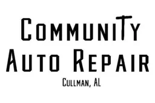
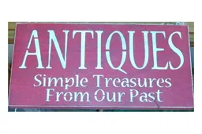
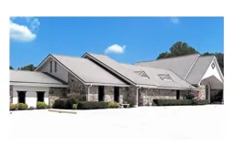
- Dodge City Barbecue (Dodge City)Local Businesses
- Dodge City Tattoo CompanyLocal Businesses
- Domino's Pizza, Hanceville Store #5398Local Businesses
- East Side Barber Shop (Cullman)Local Businesses
- El Mezcal Mexican Grill (Cullman)Local Businesses
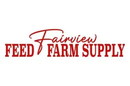
- Finders Keepers (Cullman)Local Businesses
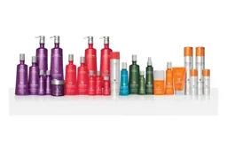
- Garden City Storage (Garden City)Local Businesses
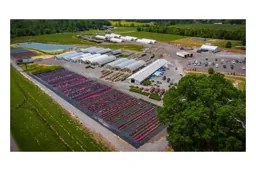
- Hanceville EXXONLocal Businesses
- Hanceville Funeral Home (Hanceville)Local Businesses
- Heart of Hanceville ApartmentsLocal Businesses
- J & R Feed Services (Cullman)Local Businesses
- J.D.R Small Engine Repair & Service (Hanceville)Local Businesses
- La Moreñita Mexican Store & Restaurant (Cullman)Local Businesses
- LB Studio (Luda Blends Barber Studio) (Cullman)Local Businesses
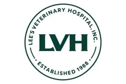
- Margaronas Cantina Mexican Restaurant (Cullman)Local Businesses
- MoMo She (Cullman)Local Businesses
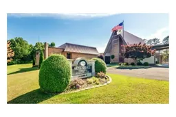
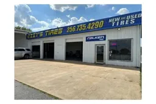
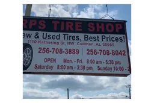
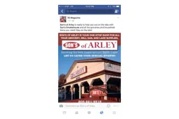
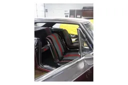
- Soul Sisters and Co (Cullman)Local Businesses
- Southeastern Woodworks (Garden City)Local Businesses
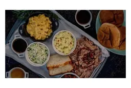
- Tellico 4x4 (Cullman)Local Businesses
- That Thrift StoreLocal Businesses
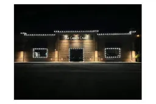
- The Grille at Trident Marina (Crane Hill)Local Businesses
- The PavilionLocal Businesses
- The Plantique, formerly Mustard Seed Nursery (Good Hope)Local Businesses
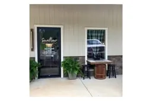
- The Veranda at Terri Pines Country Club (Vinemont area)Local Businesses
- The Warehouse Barber's Emporium / Sublime Vintage (Hanceville)Local Businesses
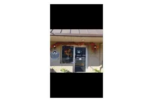
- Thrift & MoreLocal Businesses
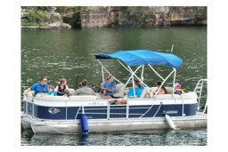
- TwoSwipe CBD (Hanceville)Local Businesses
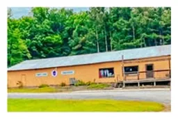

- X L Drywall LLC (Garden City)Local Businesses


Other categories
Auto Repair & MechanicsAuto SalesBarbers & SalonsBoards and CommitteesBusinessesCampus LifeCareers and TrainingChild CareChildren & FamiliesChurches & FaithCity Hall OfficesCity OfficesCommunityCommunity BuildersCommunity GroupsCommunity ServicesCouncil MembersCounty Office at City HallCrisis & EmergencyDHR ServicesDaily SpecialsDirectoriesDowntown ShopsDrinks & CoffeeEveryoneFederal ProgramsFeeding NeighborsFinance & InsuranceFood & SNAPGetting StartedGovernment & SchoolsHancevilleHealth & PharmacyHealth, Safety and SupportHelp & ResourcesHelp in the ClassroomHome ServicesHometown FavoritesJobs & EducationLocal LandmarksLodgingMakersManufacturing & IndustryMarketsMore LocalNew ListingsOtherParks, Library and Civic CenterPaying for CollegePets & Child CarePublic SafetyRestaurantsSchoolsSeniors & ElderlyShopping & RetailSmall Engine RepairSports & RecreationStreets, Water and UtilitiesSupport and SafetyTiresTowingUtilities & Public WorksUtilities and Public WorksVeteransWomen